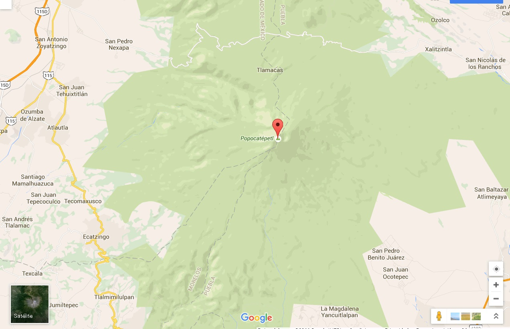
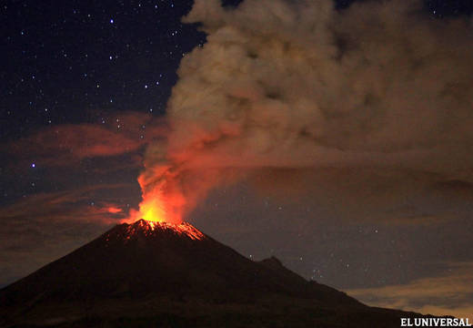
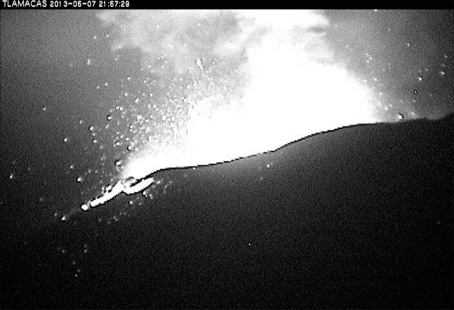
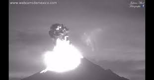
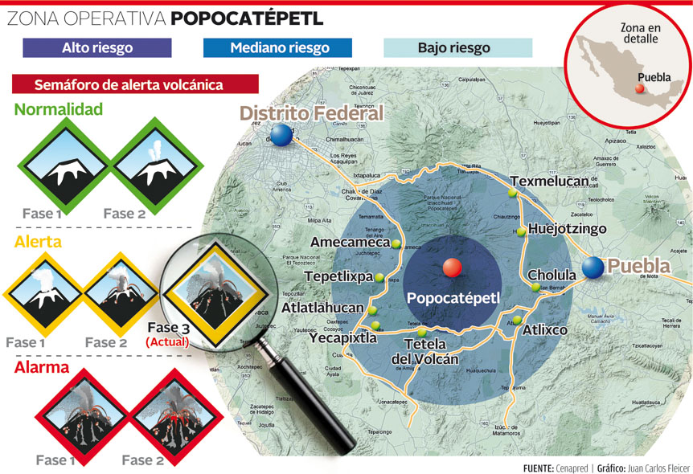
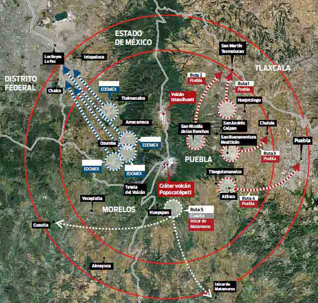

Este es el volcan.
localizado en el centro de México, en los límites territoriales de los estados de Morelos, Puebla y México. Se localiza a unos 72 km al sureste de la Ciudad de México, 43 km de Puebla, 63 km de Cuernavaca, y 53 km de Tlaxcala.
sus coordenadas son
19°01'20''N 98°37'40''0/19.0222222222,-98.627777777778
Su altura es de 5500 msnm, es de forma cónica, tiene un diámetro de 25 km en su base y la cima es el corte elíptico de un cono y tiene una orientación noreste-suroeste. La distancia entre las paredes de su cráter varía entre los 660 y los 840 m.
Su nombre, proveniente de la lengua náhuatl, compuesto por Popōca «que humea» y tepētl «montaña», en conjunto significa «montaña que humea», debido a su ya constante actividad desde la época prehispánica.
El Popocatépetl es un estratovolcán, y los estudios paleomagnéticos que se han hecho de él indican que tiene una edad aproximada de 730 000 años. El primer ascenso registrado a este volcán fue hecho mucho antes de la época del Imperio mexica en 1289, por los Tecuanipas; el segundo ascenso hecho por los españoles fue dirigido por Diego de Ordás en 1519, para conseguir azufre para su pólvora.
Recomendaciones en caso de caída de ceniza volcánica
No humedecer la ceniza a fin de evitar taponamientos en el sistema de alcantarillado
Mantén la calma.
Utiliza medios electrónicos y de comunicación para obtener información confiable que den las autoridades de Protección Civil sobre la caída de ceniza y atiende siempre sus instrucciones.
No realices actividades al aire libre y si es posible no salgas.
Barre y retira la ceniza de techos, azoteas, patios y calles, deposítalas en bolsas y no permitas que se vaya al drenaje.
Cierra puertas y ventanas y coloca toallas o trapos húmedos en las rendijas.
Si tienes que salir cúbrete con un pañuelo o tapabocas, limpia ojos y garganta con agua pura.
Para los ojos, usa lentes protectores, especialmente si usas lentes de contacto.
Ten a la mano una linterna y pilas.
La ceniza volcánica puede ser resbaladiza, sobre todo cuando está mojada. Toma las precauciones necesarias.
Cubre tinacos, cisternas y depósitos de agua.
Si es posible no conduzcas, si tienes que hacerlo, hazlo a baja velocidad y con las luces encendidas, ya que la ceniza dificulta la visibilidad y provoca que el pavimento se vuelva resbaloso.
Ante la caída de ceniza volcánica evita consumir alimentos en la vía pública.
Si permaneces expuesto por algún tiempo a las cenizas volcánicas, al ingresar a tu casa se recomienda cambiar de ropa.
Durante la caída de ceniza volcánica, evita que los menores realicen actividades al aire libre.
Mantén a tus mascotas en un lugar techado al igual que sus alimentos. Si tus macotas salen, cepíllalos antes de permitirles la entrada nuevamente.
La ceniza puede ser usada para parques, jardines, macetas o tierras de cultivo, ya que es rica en minerales.
No repitas ni difundas rumores. La ciudad de Puebla se encuentra a una distancia segura, no intentes salir.
Usa las vías de comunicación solo en caso de ser necesario.
Una erupción volcánica puede ser un acontecimiento impresionante y destructivo. A continuación se indican varios consejos para evitar el peligro y saber qué hacer si te sorprende una erupción. Consejos de seguridad: Mantente alejado de volcanes activos. Si vives cerca de un volcán activo, prepara un kit de emergencia que incluya gafas de seguridad, una máscara, una linterna y una radio en buen estado que funcione con pilas. Elabora una ruta de evacuación y ten el depósito de gasolina del coche siempre lleno. Evacua siguiendo las recomendaciones de las autoridades para no encontrarte lava y barro, así como rocas y escombros que puede arrojar el volcán. Evita zonas de ríos y regiones bajas. Antes de abandonar tu casa, ponte una camisa de manga larga y pantalones largos; usa gafas de seguridad o normales, sin lentillas. Ponte una máscara de emergencia o envuélvete la cara con un paño húmedo. Si no vas a evacuar, cierra puertas y ventanas, y bloquea la chimenea y otros puntos de ventilación para evitar que la ceniza entre en la casa. Ten en cuenta que la ceniza puede sobrecargar el tejado y puedes necesitar retirarla. Durante la limpieza, lleva elementos de protección La ceniza puede dañar motores y piezas metálicas, así que evita conducir. Si debes conducir, no superes los 55 kilómetros por hora
El Popocatépetl ha estado desde siempre en actividad, a pesar de haber estado en reposo durante buena parte de la segunda mitad del siglo XX. En 1991 se inició un incremento en su actividad y a partir de 1993 las fumarolas eran ya claramente visibles desde distancias de alrededor de 50 kilómetros. El Popocatépetl es conocido por sus alta actividad volcánica, que se presenta comúnmente. Desde que se reactivó, en 1997, hasta el momento, ha presentado una serie de erupciones de las cuales la más violenta ha sido la del año 2000, y la última la noche del 4 y madrugada del 5 de noviembre de 2014. El volcán es uno de los más monitoreados del mundo y también es uno de los más peligrosos y que amenaza más de 26 millones de personas.
Cuatro tipos de monitoreo
Para evaluar el estado de actividad y riesgo de un volcán, el Cenapred cuenta con cuatro tipos de monitoreo: visual, sísmico, geodésico y geoquímico. Un total de 25 estaciones remotas se encuentran ubicadas en las faldas del volcán, algunas a 2 kilómetros del cráter.
El equipo de medición incluye sismógrafos triaxiales de periodo corto, de banda ancha y 4 inclinómetros biaxiales para medir la deformación. De acuerdo al Cenapred, los instrumentos de medición sísimica son los más importantes. También se cuenta con una cámara de video con enlace de microondas, un radar doppler meteorológico y diversos equipos para medir concentraciones de dióxido de azufre y dióxido de carbono.
Un puesto central recibe más de 50 señales de telemetría y monitorea la actividad del volcán las 24 horas del día. En caso de existir una actividad sísmica importante, el Cenapred activa una alarma acústica y envía mensajes automatizados a dispositivos móviles y localizadores del personal de guardia. El Cenapred también cuenta con un sistema automático de detección de flujos ubicado en la ladera norte del Popocatépetl. Dos estaciones de medición monitorean la actividad en cada una de las barrancas que descienden del glaciar. Estas fueron instaladas como proyecto en conjunto con el U.S. Geological Survey. El Cenapred cuenta con cuatro estaciones que transmiten imágenes: Altzomoni, Tlamacas, Tianguismanalco y Tochimilco. De las cuatro, Tlamacas fue donde se pudo visualizar la actividad de anoche, mostrando imágenes de la emisión de rocas incandescentes cerca del glaciar. La transmisión de imágenes se realiza por medio de cámaras instaladas en las estaciones remotas, las cuales realizan acercamientos o movimientos controlados de manera remota. La cámara que utiliza el Cenapred es una PELCO ESPRIT que transmite imágenes en resolución VGA (640 x 480 px) y cuenta con un sensor para registrar imágenes nocturnas.
Cualquier usuario puede acceder al sitio del Cenapred y revisar cualquiera de las cuatro estaciones para visualizar la actividad del Popocatépetl. También hay un espacio dedicado a los reportes en donde se explica de modo detallado qué es lo que está ocurriendo y en qué estado se encuentra el nivel de alarma.
De acuerdo a la leyenda, esto es puramente por amor. La historia cuenta el gran amor entre un guerrero llamado Popocatépetl y una princesa tlaxcaltelca de nombre Iztaccíhuatl, que desde tiempos prehispánicos permanecen juntos, uno frente a otro. Los aztecas dominaban el Valle de México, cuando el cacique de Tlaxcala decidió pelear por la libertad de su pueblo, lo que originó una guerra entre aztecas y tlaxcaltecas. La hija del cacique de Tlaxcala, la princesa Iztaccíhuatl, estaba enamorada del joven Popocatépetl, uno de los principales guerreros de este pueblo. Antes de ir a la guerra, el joven pidió la mano de la princesa en matrimonio. El cacique de Tlaxcala aceptaría sólo si el guerrero regresaba victorioso, asimismo, prometió recibirlo con el festín del triunfo y el lecho de su amor.
Durante la guerra, un rival de Popocatépetl inventó que este había muerto en combate, al enterarse, la princesa Iztaccíhuatl lloró la muerte de su amado, se dice que su pena era tan grande que murió de tristeza.
Popocatépetl, sin saber de la trágica muerte de su amada, venció en todos los combates y regresó triunfante a casa, donde recibió la terrible noticia. Desconsolado, el hombre tomó el cadáver de su princesa y lo cargó hasta la cima de una montaña. El joven guerrero le dio un beso póstumo a la princesa, tomó una antorcha humeante y se arrodilló en la montaña de enfrente a la de su amada, para velar así, su sueño eterno. Con el tiempo la nieve cubrió sus cuerpos, convirtiéndose en dos enormes volcanes. Fue de esta manera que la joven pareja quedó formalmente unida bajo la tutela de los dioses. La leyenda dice que cuando el Popocatépetl se acuerda del amor hacia su princesa, el volcán tiembla y arde de amor. Por ello, dicen, hasta hoy en día el volcán Popocatépetl continúa arrojando fumarolas.
Esatdos afectados por el volcan
El Instituto de Geografía se ha encargado de investigar las posibles repercusiones sobre la población por una posible caída de cenizas. Durante el primer semestre de 1995 se analizó la dirección y dimensión de la pluma de cenizas a partir de imágenes del satélite GEOS-8 de los días 22, 26, 27 ,28 y 31 de diciembre de 1994. Con ello se determinó la afectación sobre la población en un radio de 100 kilómetros alrededor del volcán.
Gracias a los datos sobre el comportamiento de la atmósfera y la apreciación de los cambios de dirección de la pluma o nube de ceniza revelados por las imágenes de satélite, se deduce que las direcciones sureste, sur y este son las predominantes. Esto se explica por los sistemas de vientos más frecuentes en invierno. Asimismo se estima que en el verano la nube de cenizas cambiaría de dirección dominante hacia el norte o el oeste, completando así un ciclo anual.
El espacio territorial que se ha analizado en el estudio es de aproximadamente 15,708 km² y abarca el Distrito Federal, Tlaxcala, Morelos y parcialmente los estados de Hidalgo, México y Puebla. Un caso particular de afectación se presentaría para la Ciudad de México, debido a que las cantidades de ceniza provenientes del Popocatépetl se añadirían a sus condiciones de alta contaminación (se han detectado cuando menos 100 contaminantes en su aire), y por consiguiente habría mayores riesgos para la salud de sus habitantes.